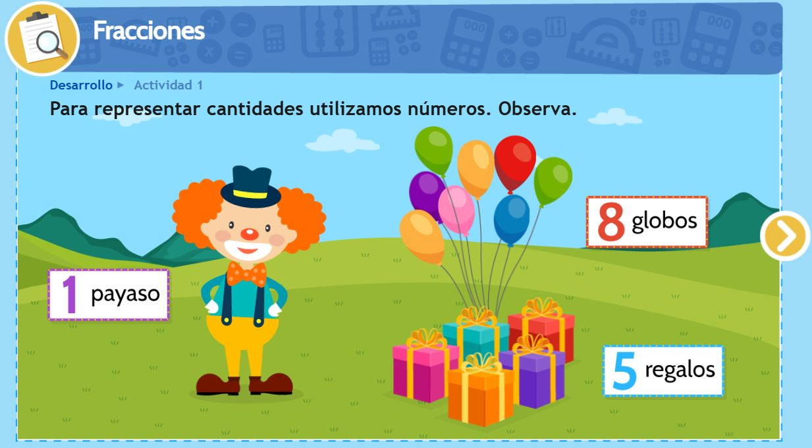
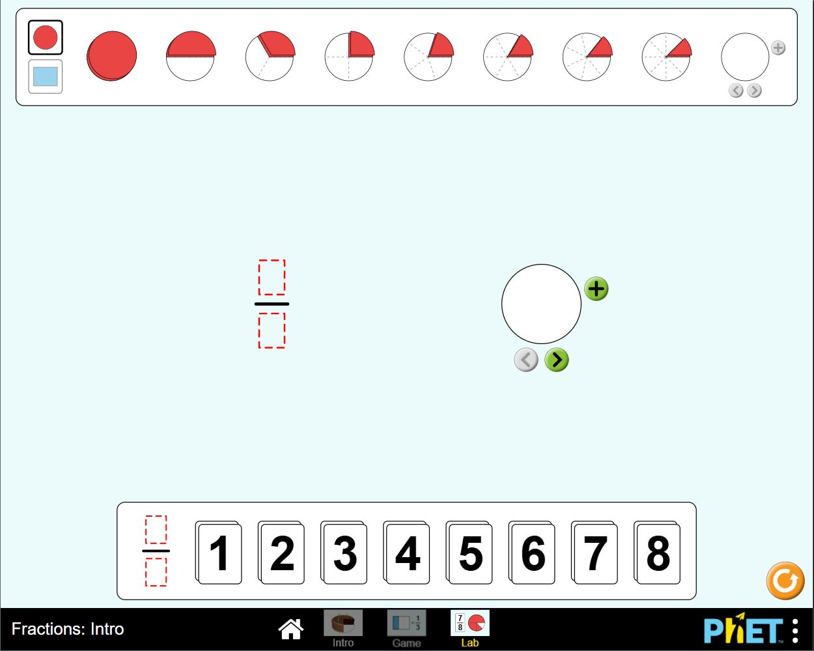

Interpretación de la fráccion como parte de un todo
Área de Conocimiento: Matemáticas.
Nivel o Grado de Aplicación: Cuarto grado de primaria.
Datos del Autor(es): Repositorio Colombia aprende.
Enlace al Repositorio:
https://colombiaaprende.edu.co/
Enlace al RED:
https://colombiaaprende.edu.co/
Descripción del RED: EL RED tiene como finalida el lograr en los estudiantes la Identificacion de la fracción como parte de un todo continuo o discreto y reconocer las diferentes representaciones para fracciones que representan partes de un todo, presenta guia de actividades y una conjunto de recursos on line.
Características del RED y Posibilidades de Uso:
- Reutilizable ya que permite su uso multiples veces en la plataforma on line..
- Interactivo ya que el contenido que se presentan al alumno está relacionado con las preguntas, respuestas o acciones que éste haya realizado previamente, según el hilo conductor de la unidad de aprendizaje brindada por el docente.
- Durable ya que se encuentra en el repositorio siendo parte de una unidad didactica las cuales no son actualidas con frecuencia.
- Usabilidad permite navegar con facilidad en la terfaz del RED,es intuitiva e informa implícitamente al alumno cómo interactuar con él, o bien existen instrucciones de uso que son claras.
- Es accesible se cumplen, al menos, los criterios del nivel de prioridad para personas con discapacidad, permite le lectura, colores que indican respuestas correctas e incorrectas asi como sonidos que evidencian la eleccion de respuestas correctas o incorrectas.
- Es interoperable puede utilizarse en cualquier entorno web y en cualquier máquina, con acceso a internet.
Este red tiene multiples posibilidades de uso ya sea en una actividad totalmente de e-learning y b-learnign, como actividad evaluativa de forma sumativa o formativa, en el reconocimiento del sistema solar.
Limitaciones del RED:
este RED cuenta con limitaciones la necesidad el uso de iinternet , para poder acceder a los juegos o actividades interactivas y la disponibilidad de los enlaces anclados en las explicaicones o secuencias de trabajo.
Verificación de Estándares:
- Usabilidad: este recurso permite ser utilizado multiples veces por los estudantes y como recurso para los docentes.
- Accesibilidad: Al ser un documento de fácil acceso, no existe barrera para su uso en clase. El contenido en cuanto a los ejercicios para ser realizados por los estudiantes facilitan la comprensión, por la presencia de imágenes que soportan el material.
- Compatibilidad: es compatible para ser usado en cualquier navegador y dispositivo tecnologico.
- Interactividad: permite al estudiante realizar los ejercicios multiples veces evidenciando sus
- Feedback: el RED permite que el estudiante verifique sus respuestas y pueda hcder un rpoceso de autoevaluacion realizando multiples intententos de aprendizaje por ensayo y error.
Captura de Pantalla o Imagen del RED:

Fractions: Intro
Área de Conocimiento:Matemáticas.
Nivel o Grado de Aplicación: Cuarto Grado de Primaria.
Datos del Autor(es): La simulación fue desarrollada por un equipo de colaboradores de la Universidad de Colorado en Boulder (Ariel Paul, Jonathan Olson, Sam Reid, Martin Veillette, Michael Dubson, Trish Loeblein, Amanda McGarry, Kathy Perkins, Vincent Davis, Michael Moorer, Dusty Cole)
Enlace al Repositorio:
https://phet.colorado.edu/es/simulations
Enlace al RED:
https://phet.colorado.edu/en/simulations/fractions-intro/credits
Descripción del RED: Este RED tiene como finalidad abordar la temática de las fracciones de una manera sencilla y didáctica, permitiendo a los educandos comprender la terminología de las fracciones (numerador y denominador) por medio de representaciones visuales. Consta de tres simulaciones que son secuenciales, cada una tiene un grado de complejidad superior al anterior (Intro, game y lab).
Características y Posibilidades de Uso:
- Permite representar de manera interactiva las fracciones de manera visual usando diferentes gráficos, como, por ejemplo, las barras y círculos.
- Su uso no tiene restricciones en cuanto a tiempo o realización de determinadas fracciones, en este sentido es reutilizable y durable.
- El RED permite orientar al estudiante en la construcción de las fracciones, ya que al dividir las figuras o barras en partes iguales, el RED las representa como áreas sombreadas, lo que hace más comprensible su solución.
- El tener tres simulaciones integradas, permite que el estudiante se motive a querer pasar de una a otra, siendo importante que el estudiante comprenda primero el concepto y la terminología de las fracciones. Asimismo, maneja en el simulador denominado “Game” niveles.
Limitaciones del RED:
No permite que el docente y los estudiantes se registren para poder revisar el progreso de cada uno de ellos desde los aciertos o desaciertos que cometan, para así con ello dar seguimiento a su aprendizaje. Por ende, se requiere que el docente de manera presencial evidencie como lo esta realizando cada uno de sus estudiantes.
Verificación de Estándares:
- Usabilidad: Su sistema es fácil de aprender a usar, ya que las opciones que tiene son sencillas de comprender y de explicarle a los estudiantes. Compatibilidad: Se puede ejecutar desde diferentes dispositivos y sistemas operativos. Además de ello, el docente puede integrarlo a espacios educativos como Google Classroom y descargar el RED en equipos electrónicos.
- Interactividad: Presenta interacción entre el usuario y el sistema del RED, ya que permite por medio de clics y arrastres construir y/o completar fracciones. Asimismo, puede aumentarse el nivel de complejidad a partir de las necesidades que el docente evidencie en sus educandos.
- Adaptabilidad: Este recurso permite adecuarlo según el ritmo de aprendizaje de cada estudiante al tener niveles, siendo un RED que complementa la explicación del docente.
- Feedback: La simulación presenta una orientación sobre cómo llevar a cabo la repartición de partes en las fracciones de manera visual (áreas sombreadas) lo cual permite que el estudiante tenga su primer contacto con las fracciones. Asimismo, su sistema integra sonidos sencillos y gráficos (cara feliz) que le permiten al estudiante comprender cuando cometió un error o un acierto.
- Seguridad y Privacidad: El sistema del RED no requiere de datos personales para poder usar el simulador. Adicional a ello, cuenta con un espacio en el que se describe su tipo de licencia (licencia Creative Commons Attribution 4.0 ( CC BY 4.0 ).
Captura de Pantalla o Imagen del RED:
